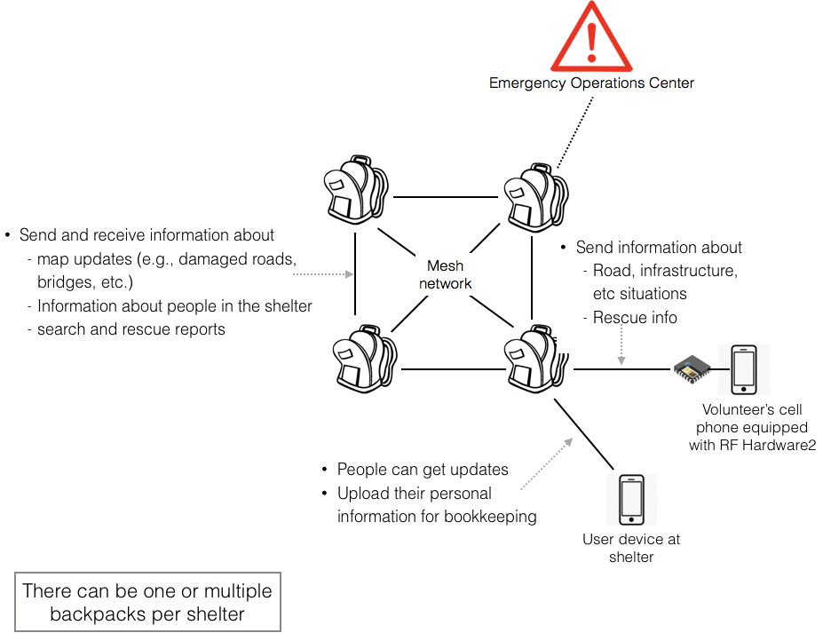
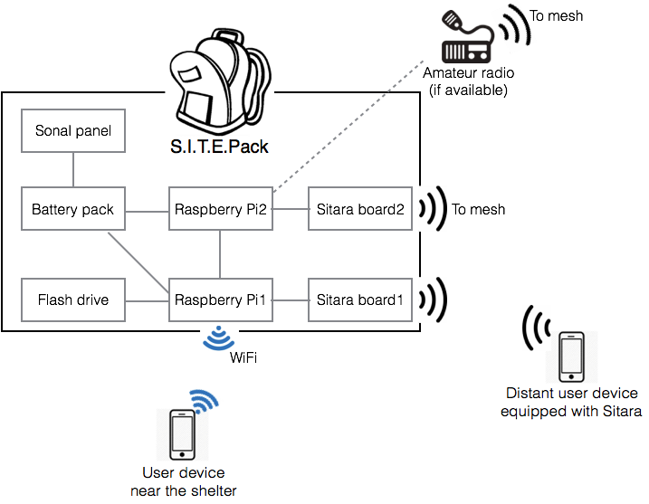

After a disaster, coordinating operations, conveying status and other vital information within the affected area is still a challenge, both within the shelter vicinity as well as between shelters and the Emergency Operation Center (EOC). Currently, information is primarily shared through voice and some data communication over amateur radio or by foot traffic. The ability to establish communication without depending on any pre-existing infrastructures will provide critical support and save lives.
To solve this issue, we propose a portable solution S.I.T.E. Pack (Stay In Touch Emergency Pack). S.I.T.E. Packs with storage and compute resources will be deployed at shelters. The kits will create a mesh network between each other and the EOC. These will also have WiFi access and our own low cost, software-defined, Sitara hardware for short-range and long-range communication, respectively. The kits will interface with existing Amateur Radio systems making them versatile. Sitara hardware can be carried by those performing assessment/search/rescue to quickly relay information to the shelters.


Aniqua Baset, PhD student, School of Computing, University of Utah
Christopher Becker, PhD student, School of Computing, University of Utah
Kurt Durr, Idaho National Lab
Mingyue Ji, Assistant Professor, Department of Electrical and Computer Engineering, University of Utah
Sneha Kasera, Professor, School of Computing, University of Utah
Neal Patwari, Associate Professor, Department of Electrical and Computer Engineering, University of Utah
Samuel Ramirez, Idaho National Lab